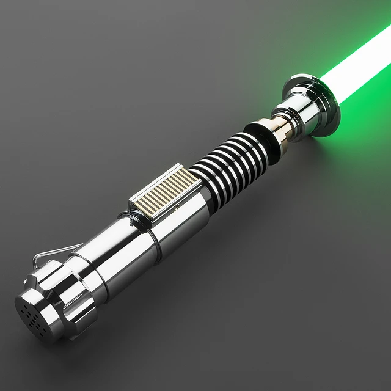
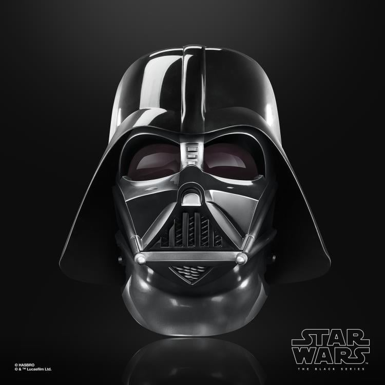
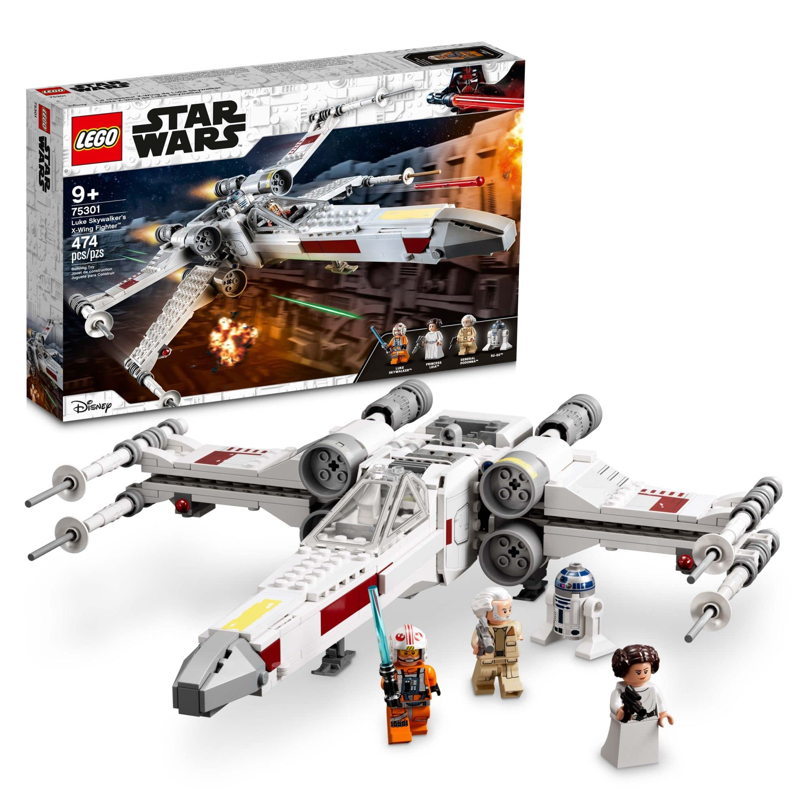

Star Wars Geek Hub
Inicio
Personajes
Películas
Series
Videojuegos
Coleccionables
Contacto
Coleccionables Galácticos

Sable de Luz de Luke
$149.99
Agregar al carrito

Casco de Darth Vader
$199.99
Agregar al carrito
Funko Pop Boba Fett
$24.99
Agregar al carrito

LEGO X-Wing
$89.99
Agregar al carrito